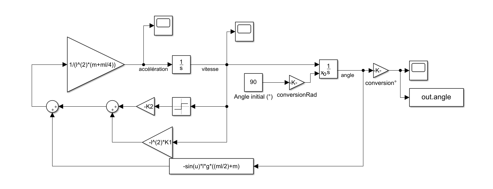

Etude mécanique
Dans le but d’atteindre l’objectif de notre projet, nous avons dû réaliser l’étude mécanique de notre système de pendule avec frottements. Pour ce faire, nous avons appliqué le principe fondamental de la dynamique à notre pendule en renseignant une masse m en son extrémité à l cm de l’axe de rotation du pendule.
Ceci nous d’obtenir notre équation différentielle du second ordre associée à notre système : $$ \ddot\theta\cdot l^2 \cdot (m + {m_1 \over 4})+ l^2 \cdot K_1 \cdot \dot\theta + l \cdot \theta \cdot g \cdot (m + {m_1 \over 2}) = - sign(\dot\theta) \cdot K_2 $$
Qui a pour solution dans notre cas : $$ \theta(t)=\theta_0 \cdot e^{{-K_1 \over 2 \cdot (m + {m_1 \over 4})}t}\cdot \cos(\sqrt{{4 \cdot g(m+{m_1 \over 2})(m+{m_1 \over 4}) - l \cdot K^{2}_{1} \over 4 \cdot l(m+{m_1 \over 4})^2}}t) - sign(\dot\theta) \cdot {K_2 \over l \cdot g(m+{m_1 \over 4})}$$
Simulation Simulink
Schéma SimuLink
Une fois nos équations obtenues, nous avons modélisé notre système sous Simulink afin de simuler l’équation de mouvement obtenue ci-dessus. En estimant les frottements (ici K1=0,01 kg.s-1 et K2=0,02 N.m) et en renseignant les autres valeurs par celles mesurées sur le pendule, nous avons obtenu une courbe représentant l’évolution de l’angle θ au cours du temps en lâchant le pendule d’un angle θ0 (ici 90°).